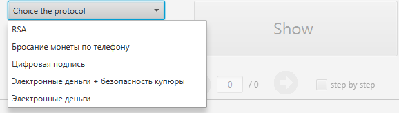
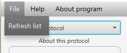
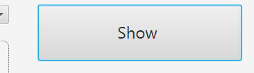
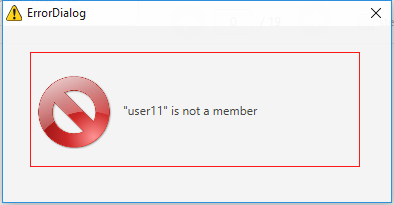

- Операционная система: Windows
- Необходимые пакеты: Java SE Runtime Environment
-
Выбор файла
При запуске программы в выпадающий список добавляются файлы с расширением .txt из папки src/ Если файлы были добавлены после запуска программы, то необходимо в меню выбрать File-> Refresh List
 -
Визуализация
Есть 2 способа визуализации протокола:
Визуализация всего протокола
Для визуализации всего протокола, необходимо нажать по кнопке show
В результате в окне под кнопкой отобразится протокол, либо появится сообщение, сообщающее об ошибке в тексте протокола.
-
Визуализация до шага:
-
Выбрать пошаговую визуализацию, путем установки соответствующего флажка.
- С помощью нажатия клавиш влево и вправо, можно изменить шаг на единицу.
- Так же можно перейти к определенному шагу, путем изменения значения в текстовом поле текущего шага.
-
-
Ошибки
В тексте протокола, могут быть допущены ошибки, тогда вы получите сообщение, сообщающее об ошибке
 -
Общие сведения
- Первые строчки файла могут начинаться с //текст – данный текст будет выводиться в описание алгоритма
- В любой строке могут присутствовать комментарии, начинающиеся с //, комментарии игнорируются при визуализации
- Количество аргументов и их последовательность должны строго совпадать с описанием сигнатуры команд в пункте 3
- Все аргументы разделяются строго одним пробелом
- Если в аргументе присутствует пробел, необходимо заключить аргумент в двойные кавычки “”
- Допускаются пустые строки для увеличения наглядности, они будут проигнорированы
- Каждая команда должна быть записана строго в одной строке
- В случае невыполнения данных требований, программа сообщит вам об ошибке, причины появления ошибок можно посмотреть в файле” Сообщения об ошибках”
- Файл должен иметь формат .txt
-
Участники
- Следующей строчкой после //Описание алгоритма, должна быть строчка, объявляющая участников протокола members user client bank
- Участников может быть сколько угодно, и они должны разделяться пробелами и начинаться с ключевого слова members
- Имена участников повторяться не могу, в случае повторения имен, программа сообщит вам об ошибке
- Если имя участника включает в себе некоторые ключевые слова, то его картинка будет изменена соответствующим образом
- Список ключевых слов:
- User
- Client
- Bank
- Server
-
Команды
Каждая команда начинается с имени участника, объявленного в members.
Любой объект при объявлении должен иметь уникальное имя, в противном случае, будет выдано сообщение об ошибке.
В [] скобках указан необязательный аргумент
-
Команда msg
Описание: Создание сообщения
Аргументы: Участник msg Имя_сообщения [описание]
Пример: user1 msg “something” -
Команда key
Описание: Создание ключа
Аргументы: Участник key Имя_ключа [описание]
Пример: user1 key “RSA public key(N,e)” -
Команда function
Описание: Создание функции
Аргументы: Участник function Имя_функции [описание]
Пример: user1 function “Односторонняя немультипликативная функция f(x)” -
Команда compute
Описание: вычисление значения функции f(x) и сохраняет его в сообщении
Аргументы: Участник compute Имя_функции Аргумент_функции
Имя_сообщения [описание]
Пример: user compute func x signature "Вычисляем значение функции f(x)" -
Команда encode
Описание: Шифрование объекта (Сообщение или ключ)
Аргументы: Участник encode Имя_объекта Имя_ключа [описание]
Пример: user encode r "bank public key" “r^e mod N” -
Команда decode
Описание: Расшифровка объекта (Сообщение или ключ)
Аргументы: Участник decode Имя_объекта Имя_ключа [описание]
Пример: client decode banknote "client private key" “m^(e*d) mod N = m” -
Команда send
Описание: Отправление объекта другому участнику (Сообщение, ключ, функция)
Аргументы: Участник send Имя_Участника2 Имя_объекта
Пример: user send client banknote -
Команда get
Описание: Получение объекта от участника (Сообщение, ключ, функция)
Аргументы: Участник get Имя_Участника2 Имя_объекта
Пример: user send client banknote -
Команда add
Описание: Добавление объекта в сообщение (другое сообщение, ключ, функция)
Аргументы: Участник add Имя_объекта Имя_сообщения [описание]
Пример: user add x banknote "Добавляем в банкноту купюру x" -
Команда extract
Описание: Извлечение объекта из сообщения (другое сообщение, ключ, функция)
Аргументы: Участник extract Имя_сообщения Имя_объекта [описание]
Пример: client extract banknote x "Извлечение купюры x из банкноты" -
Команда assert
Описание: Проверка условия
Аргументы: Участник assert Проверяемое_условие Сообщение_с_ошибкой
Пример: bank assert "check whether a banknote is used" "Банкнота уже использована" -
Команда copy
Описание: Создание копии объекта (Сообщение, ключ, функция)
Аргументы: Участник copy Имя_копируемого_объекта Имя_нового_объекта [описание]
Пример: user1 copy text "signed text" "Копия исходного сообщения "
-
-
Пример протокола
Каждая команда должна быть на одной строке!
//Криптографический протокол "Цифровая подпись"
members user1 user2
user1 key "user1 private key" "Закрытый ключ первого участника (N,d)"
user1 key "user1 public key" "Открытый ключ первого участника (N,e)"
user2 key "user2 private key" "Закрытый ключ второго участника (N,d)"
user2 key "user2 public key" "Открытый ключ второго участника (N,e)"
user1 msg text "Отправляемое сообщение"
user1 copy text "signed text" "Копия исходного сообщения, которое будет зашифровано"
user1 encode "signed text" "user1 private key" "Зашифровать сообщение закрытым ключем первого участника (m^e mod N) - алгоритм RSA"
user1 msg "signed message" "Подписанное сообщение"
user1 add "signed text" "signed message" "Поместить в подписанное сообщение зашифрованый текст"
user1 add "text" "signed message" "Поместить в подписанное сообщение исходный текст текст"
user1 get user2 "user2 public key"
user1 encode "signed message" "user2 public key" "Зашифровать подписанное сообщение открытым ключом второго участника, чтобы прочитать его мог только он m^e mod N"
user1 send user2 "signed message"
user2 decode "signed message" "user2 private key" "Расшифровать полученное сообщение своим закрытым ключом (N,d) m^(e*d) mod N = m, т.к. e*d сравнимы с 1 по модулю N"
user2 extract "signed message" text "Извлечь из подписанного сообщения исходное сообщение"
user2 extract "signed message" "signed text" "Извлечь из подписанного сообщения зашифрованное сообщение"
user2 get user1 "user1 public key"
user2 decode "signed text" "user1 public key" "Расшифровать зашифрованное сообщение открытым ключом первого участника (N,e) m^(e*d) mod N = m, т.к. e*d сравнимы с 1 по модулю N"
user2 assert "'signed text' == text" "Сообщение не от пользователя 1"
- Скачать модуль
- Скачать Java SE Runtime Environment
- Установить Java SE Runtime Environment
- Открыть файл ProtocolVisualizer.jar
- Скачать модуль
- Скачать руководство по использованию программы
- Скачать руководство по созданию протокола
Визуализатор протоколов
Программа предназначена для визуализации протоколов, основанных на криптосистемах с открытой частью ключа. В программе представлены стандартные протоколы, обсужденные на лекциях.